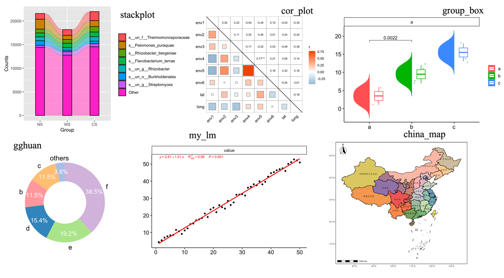
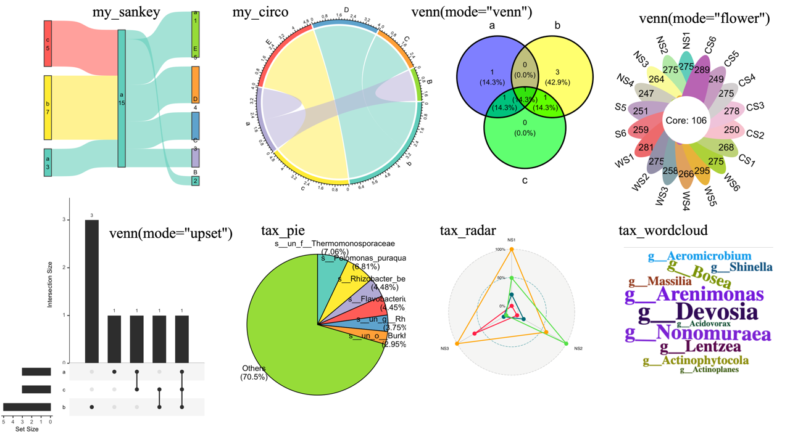

pcutils is a package that contains some useful functions for me, it offers a range of utilities and functions for everyday programming tasks.
The HTML documentation of the latest version is available at Github.
Installation
The stable version is available on CRAN:
Or you can install the development version of pcutils from GitHub with:
# install.packages("devtools")
devtools::install_github("Asa12138/pcutils")Little tools
lib_ps,del_pscan library or detach packages gracefullydabiaoprint a messagedabiao("Message",char = "😀",n = 20): 😀😀😀😀😀😀Message😀😀😀😀😀😀copy_vectorhelp to copy a vector, likedatapastapackage;copy_dfhelp to copy a dataframechange_fac_levcan change a factor levels;tidaican replace a vector by named vectorupdate_paramupdate a parameter in a functionsanxianprint a three-line tablegrepl.data.frameandgsub.data.framedo grepl and gsub on a dataframe.
Statistics
data preprocessing
remove.outliersremove the outlierscount2imitate theuniq -cin shellhebinggroup your dataframe;guolvfilter a dataframe;rm_lowremove low frequencytranstransfer your datammscaledo a scale specifying the min and maxstrsplit2is better thanstrsplitfor me;t2is better thantfor meexplodeexpand a column in dataframe;squashsquash a dataframepre_number_strprepare a number string
statistical test
twotestdo a two-group test andmultitestdo a multi-group test;group_testperforms multiple mean comparisons for a data.framefittesttest a vector fit which distributiontoXYtransfer geographical latitude and longitude to XY(m)lm_coefficientsget the coefficients of a linear model;multiregfit a multiple linear model
Visualization
utils for plot
rgb2codeconvert between r,g,b and color code;is.ggplot.colorjudge a right color;add_alphaadd a alpha for a colorplotpdf,plotgifprint pdf or gif for a plot listget_colsgenerate n colors based on a palette;scale_fill_pcandscale_color_pcare scales for ggplotadd_themegenerate a mytheme object for ggplotlegend_sizeresize the legend for a ggplot;ggplot_limget the x-y limits for a ggplotgenerate_labelsgenerate points position for a series of labelsggplot_translatortranslate the text of a ggplot
plot functions

stackplotplot a bar plot or stack bar plot easily;areaplotplot a area plot easilycor_plotplot a correlation plotgroup_boxplot a boxplot easilygghuanplot a doughnut chart;gghuan2plot a multi-doughnut chartmy_lmfit a linear model and plotchina_mapplot a china map;sample_mapplot a sample mapgghistplot a histogram

vennplot a venn plottax_pieplot a pie plottax_radarplot a radar plotmy_sankeyplot a sankey plotmy_circoplot a circlize plotmy_sunburstplot a sunburst plotmy_treemapplot a treemap plotmy_voronoi_treemapplot a voronoi treemap plotmy_circle_packingplot a circle packing plot